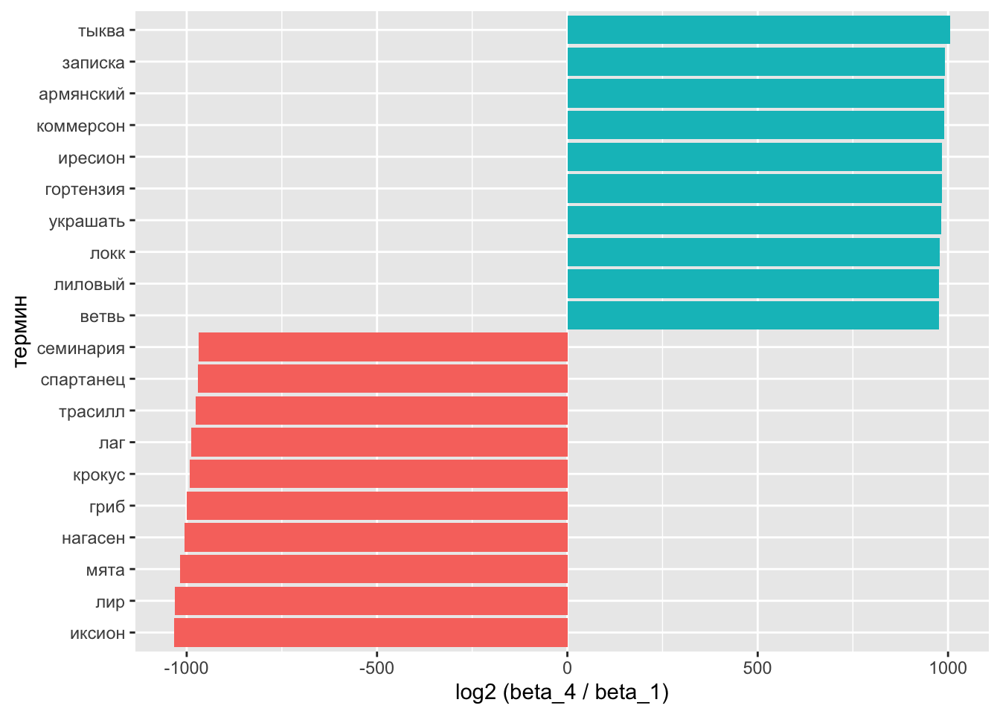
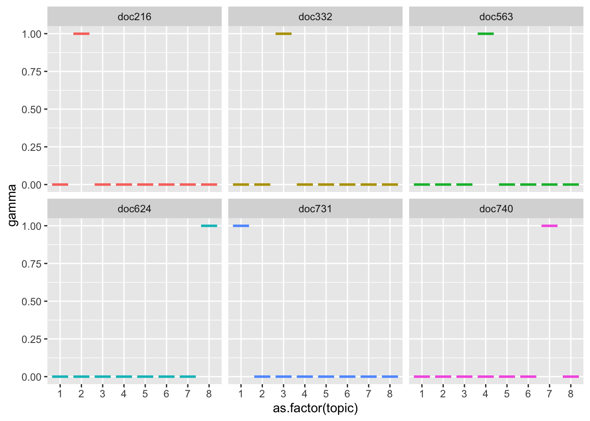

Тема 12 Тематическое моделирование
12.1 Что такое LDA
Приступая к анализу текстов (текст-майнингу), мы часто хотим разделить большую коллекцию документов на некие естественные группы, например, тематические. Одним из способов такого деления является тематическое моделирование.
Латентное размещение Дирихле (LDA) - особенно популярный метод для построения тематической модели. В нем каждый документ рассматривается как смесь тем, а каждая тема - как смесь слов. Это позволяет документам “перекрывать” друг друга по содержанию, а не разделяться на отдельные группы, что отражает типичное использование естественного языка. Например, мы можем представить коллекцию документов по истории искусства, в которой будут тексты о живописи, архитектуре и фотографии. Тема искусства будет представлена во всех документах, где-то может быть будет сочетание 2-3 тем сразу.

Чем-то работа LDA похожа на то, как мы размечаем текст текстовыделителями: например, в этом курсе зеленым можно выделить код, желтым – математические и статистические отступления, а розовым – окологуманитарные сюжеты. Как вы уже поняли, ключевой вопрос в том, сколько у вас текстовыделителей. При тематическом моделировании этот параметр задается вручную, и дальше мы посмотрим, как это делается.
12.2 Распределение Дирихле
Математические и статистические основания LDA достаточно хитроумны, но к счастью пользоваться моделью можно и без погружения в интегралы, как можно водить машину, не умея собрать двигатель внутреннего сгорания.
Общие принципы на русском языке хорошо изложены в статье “Как понять, о чем текст, не читая его” на сайте “Системный блок”.

Альфа и бета на этой схеме - гиперпараметры распределения. Гиперпараметры регулируют распределения тем по документам и слов по темам. Наглядно это можно представить так:

При α = 1 получается равномерное распределение: темы распределены равномерно (заметим, что α также называют “параметром концентрации”). При значениях α > 1 выборки начинают концентрироваться в центре треугольника, представляя собой равномерную смесь всех тем. При низких значениях альфа α < 1 большинство наблюдений находится в углах – скорее всего, в в этом случае в документах будет меньше смешения тем48. Распределение документов по топикам θ зависит от значения α, поскольку θ ~ Dir(α). Из θ выбирается конкретная тема Z.
Аналогичным образом гиперпараметр 𝛽 управляет распределением слов по темам. При меньших значениях 𝛽 темы, скорее всего, будут больше различаться. Распределение слов φ темы Z ~ Dir(β). Конкретное слово W выбирается уже из этого распределения.
Можно представить себе банкетный зал со столами: если их несколько, и они стоят по углам, то вероятность встретить вашего знакомого в углу выше, чем в центре зала. Если он при этом вегетарианец, вы его будете искать у стола с овощами, а не с котлетами.
Метафору можно понимать двояко. С одной стороны, ваш знакомый – это слово, а стол – тема, или топик. Он может нечаянно прибиться к столу с котлетами, как и слово “футбол” может оказаться в финансовых новостях. Но это сближение не будет таким устойчивым, как, например, связь слова “банк” с финансовым топиком.
С другой стороны, сами “документы” склонны прибиваться к определенным топикам: открыв газету, вы не ожидаете увидеть в одной статье новости вирусологии, педагогики и финансового регулирования такое бывает только в блогах.
12.3 Подготовка данных
Чтобы понять возможности алгоритма, мы попробуем передать ему архив телеграм-канала Antibarbari. Он хранится в репозитории этого курса на GitHub, откуда его можно скачать и повторить эксперимент. Но любому моделированию всегда предшествует подготовка данных, согласно древней мудрости garbage in - garbage out.
Нужные мне html уже лежат в рабочей директории (2 файла); но при парсинге сайтов, в принципе, действует похожая логика.
library(xml2)
library(rvest)
library(tidyverse)
messages <- read_html("./files/antibarbari_archive/messages.html")
messages2 <- read_html("./files/antibarbari_archive/messages2.html")Cледующий код позволяет достать только те узлы div, у которых значение атрибута class = text.
text <- html_elements(messages, "div.text") %>%
html_text()
text2 <- html_elements(messages2, "div.text") %>%
html_text()Сшиваем и смотрим, что получилось.
## [1] 780 1## # A tibble: 780 × 1
## value
## <chr>
## 1 "\nAntibarbari HSE \n "
## 2 "\nLatin never sleeps. Новое видео на канале Antibarbari (фрагмент семинара …
## 3 "\nПодборка видео семинара по медленному чтению \"О философии\" Аристотеля; …
## 4 "\nНовое видео в плейлисте \"Латинский язык\". Фрагмент семинара 28.02.2022h…
## 5 "\n🤖 ОТКРЫТА ЗАПИСЬ НА ПРОЕКТВ рамках проекта участники овладеют навыками п…
## 6 "\nЖелающие присоединиться к группе, читающей \"Филеба\" Платона, пишите рук…
## 7 "\nhttps://youtu.be/I-U_lG0mB3M\n "
## 8 "\nВ клубе Antibarbari продолжается семинар по чтению и обсуждению фрагменто…
## 9 "\nФилеб. Семинар 3 марта 2022. Сократ и Протарх решают следовать за логосом…
## 10 "\nВышка вернулась в аудитории, поэтому теперь у нас театральная акустика. …
## # ℹ 770 more rowsЗдесь должна следовать обычная рутина: удаление сносок, переносов строки, чисел, имейлов, хэштегов и т.п. Код мог бы выглядеть, например, вот так:
text_clean <- text %>%
mutate(value = str_replace_all(value, "(http|https)(\\S+)", " ")) %>%
mutate(value = str_replace_all(value, "\\d{2}\\.\\d{2}\\.\\d{4}", " ")) %>%
mutate(value = str_replace_all(value, "\n", " ")) %>%
mutate(value = str_replace_all(value, "\\W[-A-Za-z0-9_.%]+\\@[-A-Za-z0-9_.%]+\\.[A-Za-z]+", " "))Но некоторые предварительные эксперименты показали, что в исходном html очень много латинского и греческого текста, разного рода смайлов и т.п., и все это плохо сказывается на модели. Поэтому я применю радикальное средство и удалю все, что не написано кириллицей:
text_clean <- text %>%
mutate(value = str_replace_all(value,
"[Сс]ылка|[Чч]асть", " ")) %>%
mutate(value = str_replace_all(value,
"[[^\u0400-\u04FF]]", " ")) %>%
mutate(value = str_replace_all(value,
" \\w{1,2} ", " ")) %>%
mutate(value = str_remove_all(value,
" лат " )) %>%
mutate(value = str_remove_all(value,
" гр " ))
text_clean## # A tibble: 780 × 1
## value
## <chr>
## 1 " "
## 2 " Новое видео канале фрагмент семинара …
## 3 " Подборка видео семинара медленному чтению философии Аристотеля руководи…
## 4 " Новое видео плейлисте Латинский язык Фрагмент семинара …
## 5 " ОТКРЫТА ЗАПИСЬ ПРОЕКТВ рамках проекта участники овладеют навыками парсин…
## 6 " Желающие присоединиться группе читающей Филеба Платона пишите руководи…
## 7 " "
## 8 " клубе продолжается семинар чтению обсуждению фрагментов утраче…
## 9 " Филеб Семинар марта Сократ Протарх решают следовать логосом кото…
## 10 " Вышка вернулась аудитории поэтому теперь нас театральная акустика доска…
## # ℹ 770 more rowsКаждому документу (посту в Telegram) следует добавить id, иначе при разделении на слова мы потеряем данные об их происхождении.
Теперь можно лемматизировать. Как это делать, мы уже знаем.
library(udpipe)
russian_syntagrus <- udpipe_load_model(file = "russian-syntagrus-ud-2.5-191206.udpipe")
text_ann <- udpipe_annotate(russian_syntagrus, text_clean$value)Разный остаточный мусор.
## # A tibble: 62,690 × 2
## doc_id lemma
## <chr> <chr>
## 1 doc2 новый
## 2 doc2 видео
## 3 doc2 канал
## 4 doc2 фрагмент
## 5 doc2 семинар
## 6 doc3 подборка
## 7 doc3 видео
## 8 doc3 семинар
## 9 doc3 медленный
## 10 doc3 чтение
## # ℹ 62,680 more rowsЗагружаем список стоп-слов для русского языка: возвращаясь к метафоре с банкетом, это салфетки. Они лежат на всех столах и нам не интересны.
library(stopwords)
stop <- stopwords(language = "ru", source = "stopwords-iso") %>%
as_tibble() %>%
rename(lemma = value)Очень короткие слова и очень короткие посты удаляем.
text_tidy <- text_tbl %>%
anti_join(stop) %>%
filter(nchar(lemma) > 1) %>%
group_by(doc_id) %>%
filter(n() >= 15) %>%
filter(!lemma %in% c("ибо", "либо")) %>%
ungroup()
text_tidy## # A tibble: 39,818 × 2
## doc_id lemma
## <chr> <chr>
## 1 doc5 открыто
## 2 doc5 запись
## 3 doc5 Проектвый
## 4 doc5 рамка
## 5 doc5 проект
## 6 doc5 участник
## 7 doc5 овладеть
## 8 doc5 навык
## 9 doc5 парсинг
## 10 doc5 подготовить
## # ℹ 39,808 more rowsИсправим некоторые ошибки лемматизации.
12.4 Матрица встречаемости
Поскольку LDA – вероятностная модель, то на входе она принимает целые числа. В самом деле, не имеет смысла говорить о том, что некое распределение породило 0.5 слов или того меньше. Поэтому мы считаем абсолютную, а не относительную встречаемость – и не tf_idf49.
## # A tibble: 6 × 3
## # Groups: doc_id, lemma [6]
## doc_id lemma n
## <chr> <chr> <int>
## 1 doc10 акустика 1
## 2 doc10 аудитория 1
## 3 doc10 воспротивиться 1
## 4 doc10 вышка 1
## 5 doc10 гибридный 1
## 6 doc10 грамматика 1Для работы с LDA в R устанавливаем пакет topicmodels. На входе нужная нам функция этого пакета принимает такую структуру данных, как document-term matrix (dtm), которая используется для хранения сильно разреженных данных и происходит из популярного пакета для текст-майнинга tm.
Поэтому “тайдифицированный” текст придется для моделирования преобразовать в этот формат, а полученный результат вернуть в опрятный формат для визуализаций50.
Для преобразования подготовленного корпуса в формат dtm воспользуемся возможностями пакета tidytext:
## <<DocumentTermMatrix (documents: 538, terms: 11275)>>
## Non-/sparse entries: 32607/6033343
## Sparsity : 99%
## Maximal term length: 27
## Weighting : term frequency (tf)Убеждаемся, что почти все ячейки в нашей матрице – нули (99% разреженность).
12.5 Число тем
Количество тем для модели всегда задается вручную. Мы не всегда заранее знаем, сколько тем в нашем корпусе, и здесь на помощь приходит функция perplexity() из topicmodels. Она показывает, насколько подогнанная модель не соответствует данным – поэтому чем значение меньше, тем лучше.
Подгоним сразу несколько моделей с разным количеством тем и посмотрим, какая из них покажет себя лучше. Выполнение кода ниже займет какое-то время.
n_topics <- c(2, 4, 8, 16, 32, 64)
text_lda_compare <- n_topics %>%
map(LDA, x = text_dtm,
control = list(seed = 0211))data_frame(k = n_topics,
perplex = map_dbl(text_lda_compare, perplexity)) %>%
ggplot(aes(k, perplex)) +
geom_point() +
geom_line() +
labs(title = "Оценка LDA модели",
subtitle = "Оптимальное количество топиков",
x = "Число топиков",
y = "Perplexity")
Если верить графику, предпочтительны 64 темы (на самом деле, если подогнать еще больше моделей, то и все 200). Но спешить не стоит.
Если эксперт задаст в параметрах своей программы слишком мало тем, то разные самостоятельные топики сольются в один и станут неразличимы для взгляда исследователя. Если будет задано слишком большое число топиков, то помимо реальных тем, присутствующих в корпусе, появятся «паразитные», которые с точки зрения математического аппарата показывают совместно встречающиеся слова, однако на практике эти слова не будут образовывать тематически самостоятельных контекстов. Поэтому процесс тематического моделирования включает этап подбора нужного количества топиков и соизмерение получившихся результатов с разноплановыми соображениями.
Мои разноплановые соображения говорят, что больше 10 топиков выделять непродуктивно.
12.7 Слова и темы
Пакет tidytext дает возможность “тайдифицировать” объект lda с использованием разных методов. Метод β (“бета”) извлекает вероятность того, что слово происходит из данного топика.
text_topics <- tidy(text_lda, matrix = "beta")
text_topics %>%
filter(term == "огурец") %>%
arrange(-beta)## # A tibble: 8 × 3
## topic term beta
## <int> <chr> <dbl>
## 1 6 огурец 2.27e- 3
## 2 4 огурец 4.03e- 4
## 3 8 огурец 2.56e- 4
## 4 7 огурец 1.93e- 20
## 5 5 огурец 4.99e-284
## 6 1 огурец 6.29e-286
## 7 3 огурец 1.85e-286
## 8 2 огурец 3.18e-287Например, слово “огурец” с большей вероятностью порождено темами 4, 6 или 8, чем остальными темами. Кажется, мы нашли огуречные темы 🥒🥒🥒
Посмотрим на главные термины в топиках.
text_top_terms <- text_topics %>%
group_by(topic) %>%
arrange(-beta) %>%
slice_head(n = 12) %>%
ungroup()
head(text_top_terms)## # A tibble: 6 × 3
## topic term beta
## <int> <chr> <dbl>
## 1 1 язык 0.0103
## 2 1 латинский 0.00633
## 3 1 название 0.00598
## 4 1 древний 0.00507
## 5 1 издание 0.00496
## 6 1 греческий 0.00436text_top_terms %>%
mutate(term = reorder(term, beta)) %>%
ggplot(aes(term, beta, fill = factor(topic))) +
geom_col(show.legend = FALSE) +
facet_wrap(~ topic, scales = "free", ncol=4) +
coord_flip()В “огуречной” теме 4 обнаружились также “плод”, “растение” “мед”. Видимо, наш алгоритм вполне “узнал” плодово-овощную рубрику Ирины Макаровой, в которой она рассказывает, что и зачем выращивали древние греки и римляне. А вот “мята” прибилась к топику 1.
Сравним топики 1 и 4 по формуле: \(log_2\left(\frac{β_2}{β_1}\right)\). Если \(β_2\) в 2 раза больше \(β_1\), то логарифм будет равен 1; если наоборот, то -1.
На всякий случай: \(\frac{1}{2} = 2^{-1}\).
Для подсчетов снова придется трансформировать данные.
beta_spread <- text_topics %>%
filter(topic %in% c(1, 4)) %>%
mutate(topic = paste0("topic_", topic)) %>%
spread(topic, beta) %>%
filter(topic_1 > .001 | topic_4 > .001) %>%
mutate(log_ratio = log2(topic_4 / topic_1))
head(beta_spread)## # A tibble: 6 × 4
## term topic_1 topic_4 log_ratio
## <chr> <dbl> <dbl> <dbl>
## 1 абрикос 0.0000000153 1.61e- 3 16.7
## 2 автор 0.000920 2.66e- 3 1.53
## 3 аида 0.00161 6.05e- 4 -1.41
## 4 английский 0.000230 1.61e- 3 2.81
## 5 анемон 0.00138 8.85e-148 -479.
## 6 античность 0.00102 1.41e- 3 0.473На графике выглядит понятнее:
beta_log_ratio <- beta_spread %>%
mutate(sign = case_when(log_ratio > 0 ~ "pos",
log_ratio < 0 ~ "neg")) %>%
select(-topic_4, -topic_1) %>%
group_by(sign) %>%
arrange(desc(abs(log_ratio))) %>%
slice_head(n = 10)beta_log_ratio %>%
ggplot(aes(reorder(term, log_ratio), log_ratio, fill = sign)) +
geom_col(show.legend = FALSE) +
xlab("термин") +
ylab("log2 (beta_4 / beta_1)") +
coord_flip()
В теме 4 видим и других обитателей садов и огородов: “гортензия”, “олива-иресиона”, а в теме 1 больше персоналий: например, буддийский монарх Нагасена, мифический Иксион и др.
12.8 Темы и документы
Распределение тем по документам хранит матрица gamma.
text_documents <- tidy(text_lda, matrix = "gamma")
text_documents %>%
filter(topic == 4) %>%
arrange(-gamma)## # A tibble: 538 × 3
## document topic gamma
## <chr> <int> <dbl>
## 1 doc288 4 1.00
## 2 doc563 4 0.999
## 3 doc402 4 0.999
## 4 doc601 4 0.999
## 5 doc272 4 0.999
## 6 doc199 4 0.999
## 7 doc400 4 0.999
## 8 doc186 4 0.999
## 9 doc470 4 0.999
## 10 doc737 4 0.999
## # ℹ 528 more rowsЗначение gamma можно понимать как долю слов в документе, происходящую из данного топика. Например, тема 4 представлена в документе 288 Посмотрим на него:
doc_288 <- text_clean %>%
filter(id == "doc_288") %>%
pull(value)
paste0(substr(doc_288, 1, 279), "...")## [1] " Тыква Закончилось лето подходит завершению наша сезонная плодово ягодная рубрика Сегодня вспомним тыкве ведь греки охотно выращивали привычная нам тыква те что были греков римлян одно то хотя все они относятся семейству тыквенных Тыквы прилавка супер..."Каждый документ в рамках LDA рассматривается как собрание тем. Значит, сумма всех гамм для текста должна быть равна единице. Проверим.
## # A tibble: 1 × 1
## sum
## <dbl>
## 1 1Все верно!
Теперь отберем несколько длинных постов и посмотрим, какие топики в них представлены.
long_posts <- text_clean %>%
mutate(char = nchar(value)) %>%
arrange(-char) %>%
slice_head(n = 6) %>%
pull(id)
long_posts <- str_remove_all(long_posts, "_")
long_posts## [1] "doc731" "doc216" "doc740" "doc332" "doc624" "doc563"text_documents %>%
filter(document %in% long_posts) %>%
arrange(-gamma) %>%
ggplot(aes(as.factor(topic), gamma, color = document)) +
geom_boxplot(show.legend = F) +
facet_wrap(~document)
Документы 332 относятся к топику 3. Сравним со словами для этого топика на графике выше.
doc_332 <- text_clean %>%
filter(id == "doc_332") %>%
pull(value)
paste0(substr(doc_332, 1, 279), "...")## [1] " Даймон философии астрологии Даймон это один самых заметных персонажей занимательной Греции знакомый многим как источник знамений посылаемых Сократу Даймон помимо этого один элементов античной астрологической практики которую изучая античную философию часто невольно ..."12.9 Распределения вероятности для топиков
text_documents %>%
ggplot(aes(gamma, fill = as.factor(topic))) +
geom_histogram(show.legend = F) +
facet_wrap(~ topic, ncol = 5) +
scale_y_log10() +
labs(title = "Распределение вероятностей для каждого топика",
y = "Число документов",
x = expression(gamma))
Почти ни одна тема не распределена равномерно: гамма чаще всего принимает значения либо около нуля, либо в районе единицы. Тема 8, однако, отклоняется от этого правила.
## # A tibble: 12 × 3
## topic term beta
## <int> <chr> <dbl>
## 1 8 философия 0.0136
## 2 8 текст 0.00652
## 3 8 латинский 0.00601
## 4 8 курс 0.00601
## 5 8 язык 0.00597
## 6 8 цицерон 0.00594
## 7 8 семинар 0.00563
## 8 8 студент 0.00543
## 9 8 аристотель 0.00541
## 10 8 античный 0.00497
## 11 8 проект 0.00495
## 12 8 античность 0.00471Действительно, здесь встречаются слова, связанные с изучением античности в целом и потому возможные в разных контекстах. Можно сказать, что это своего рода метатопик, характеризующий тематику канала в целом.
12.10 Интерактивные визуализации
Более подробно изучить полученную модель можно при помощи интерактивной визуализации. Функция ниже заимстовована отсюда.
topicmodels2LDAvis <- function(x, ...){
post <- topicmodels::posterior(x)
if (ncol(post[["topics"]]) < 3) stop("The model must contain > 2 topics")
mat <- x@wordassignments
LDAvis::createJSON(
phi = post[["terms"]],
theta = post[["topics"]],
vocab = colnames(post[["terms"]]),
doc.length = slam::row_sums(mat, na.rm = TRUE),
term.frequency = slam::col_sums(mat, na.rm = TRUE)
)
}Свежую верию пакета LDAvis надо устанавливать из репозитория.
Ссылка на интерактивную визуализацию топиков.
Об этом приложении см. здесь.
Значения лямбды, очень близкие к нулю, показывают термины, наиболее специфичные для выбранной темы. Это означает, что вы увидите термины, которые “важны” для данной конкретной темы, но не обязательно “важны” для всего корпуса.
Значения лямбды, близкие к единице, показывают те термины, которые имеют наибольшее соотношение между частотой терминов по данной теме и общей частотой терминов из корпуса51.
Сами разработчики советуют выставлять значение лямбды в районе 0.6.
https://www.mithilaguha.com/post/topic-modeling-and-latent-dirichlet-allocation↩︎
https://datascience.stackexchange.com/questions/21950/why-we-should-not-feed-lda-with-tfidf/49704#49704?newreg=c17592380de141cf9064c9c5ef09cdc6↩︎
https://stackoverflow.com/questions/50726713/meaning-of-bar-width-for-pyldavis-for-lambda-0↩︎